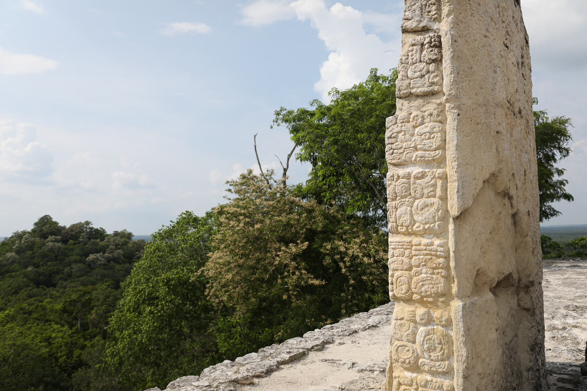
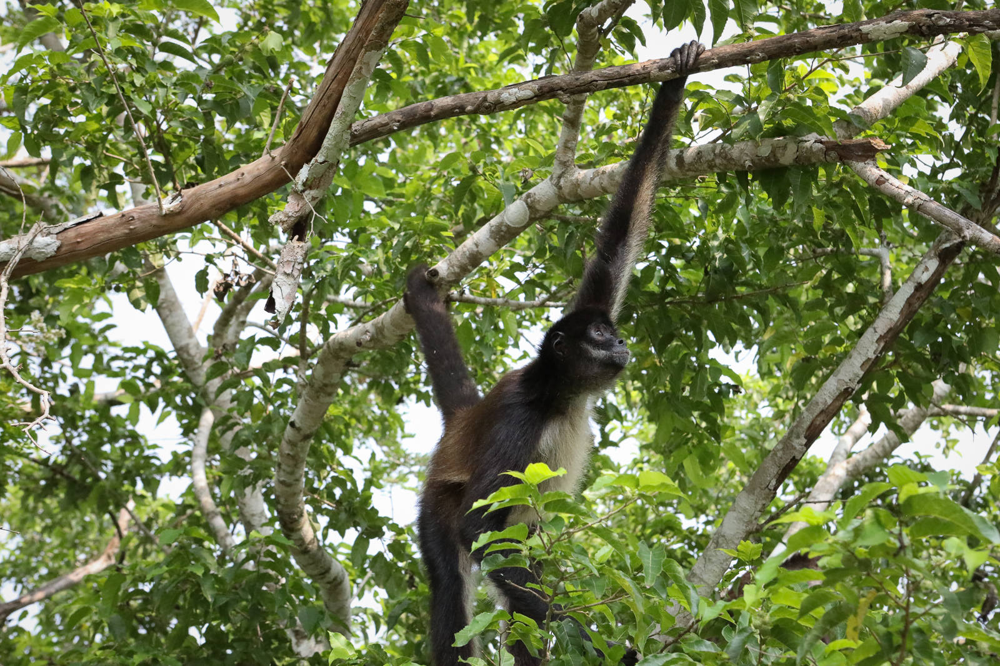
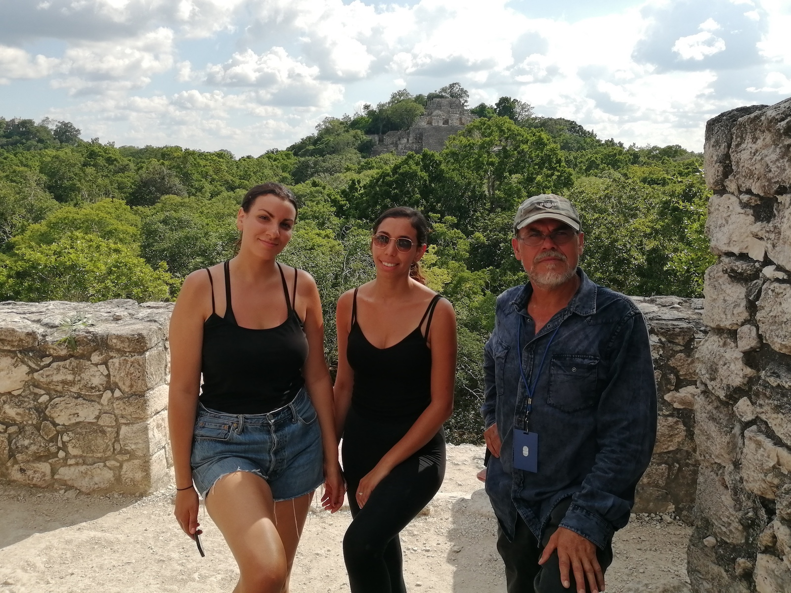

Calakmul was for hundreds of years the capital of the Mayan world. Its influence stretched thousands of miles, from the northern coast of the Yucatan peninsula south towards present-day Guatamala, home of its principal rival Tikal. Today Calakmul, one of three UNESCO world heritage sites in the Yucatan, is the largest and most impressive Mayan site, containing thousands of structures, some uncovered but most remaining hidden for now and, perhaps, for ever. Among these ruins is the iconic Structure II, the largest pyramid in the Yucatan.
What sets Calakmul apart from the many other Mayan sites in the Yucatan is its setting. It is as far away from civilization as it is possible to get in Mexico, located in the center of the Calakmul Biosphere Reserve, the largest nature reserve in the country. The result is a unique combination of natural beauty and ancient history: howler and spider monkeys throng the ruins, while more reclusive fauna such as jaguars, pumas, and tapirs lurk just out of sight. A few miles away three million bats sleep in a small cave, from which they erupt at dusk every evening.
Calakmul's remote location — 60 kilometers from the nearest town — presents a challenge for travellers, with the result that currently only a handful of intrepid visitors enter the site each day. Most of the nearest hotels have no internet presence and no English-speaking staff. Only a handful of hotels in the area cater to foreign tourists, and as a result can charge more or less whatever they'd like. Many of the trails within the Reserve are not signposted — in fact, some of the most impressive locations for spotting wildlife are even deliberately obscured to prevent visitors without guides from accessing them. Having a guide is, therefore, crucial for getting the most out of visiting Calakmul. Unfortunately, there are only a few English-speaking guides in the area. During the high season it is particularly essential that you book a guide in advance.
Calakmul Guides is currently the only direct connection for tourists to contact expert guides in the Calakmul area. Calakmul Guides is led by Roberto Garcia Villaseñor, a certified guide who grew up in the Calakmul area and has explored the Calakmul Biosphere Reserve for over thirty years. He has guided travellers from dozens of countries, including biologists and archaeologists. Calakmul Guides can help you every step of the way to make your journal to Calakmul as smooth as possible, including booking hotels and transportation, helping you plan your itinerary, and of course guiding you through Calakmul and many other Mayan sites in the region.
Get in touch with Roberto via WhatApp +521 983 117 3803 or email. Please note, there's not a lot of WiFi in the jungle, so it may take up to a week for a response if we're currently out on an expedition.
